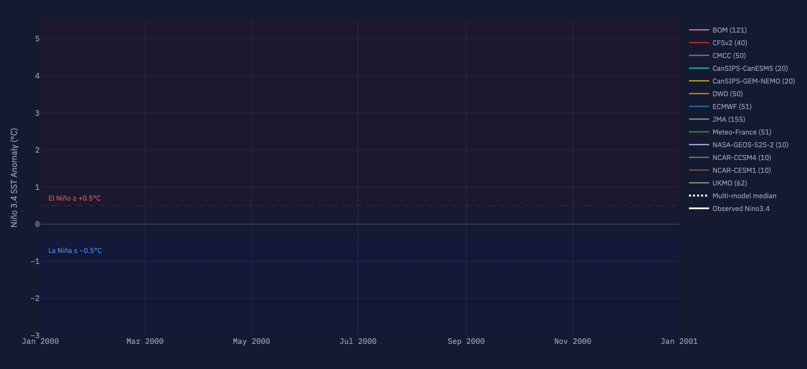
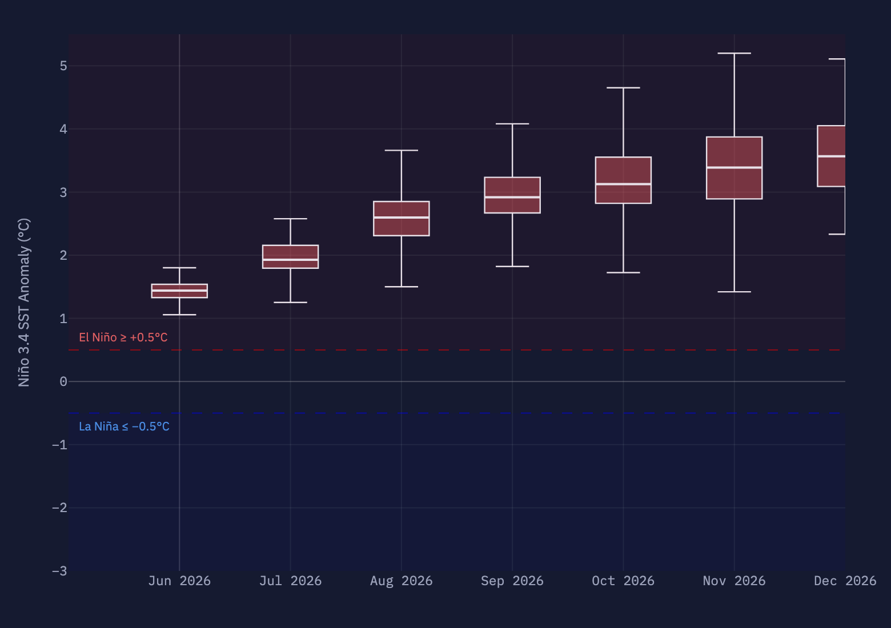
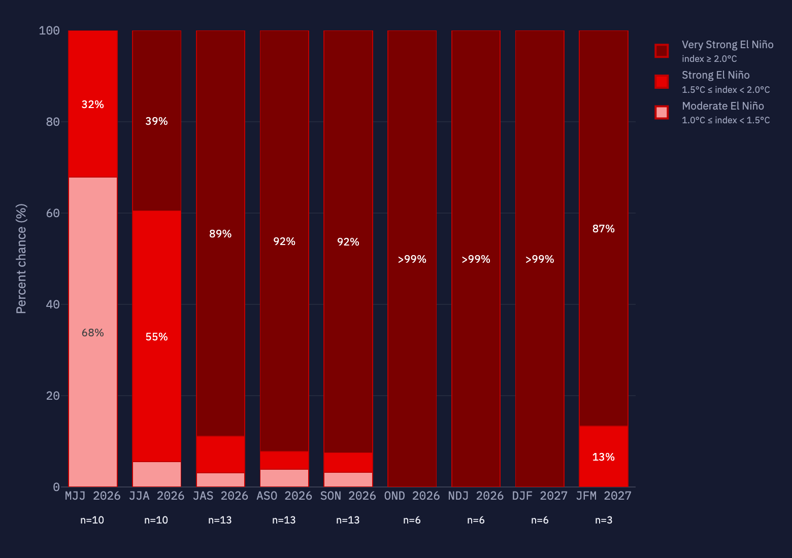
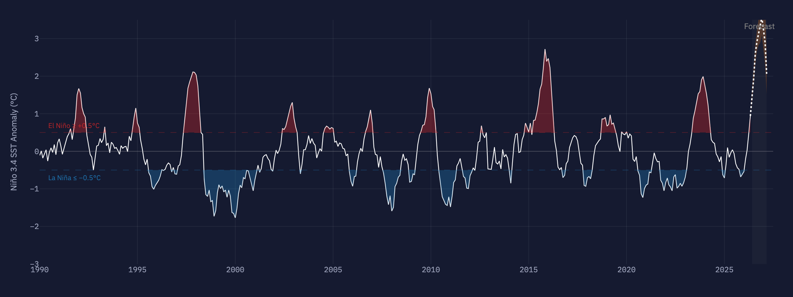

El Niño Watch · Niño 3.4
A major El Niño is building, forecast to peak near +3.3 °C this winter.
Observed Niño 3.4 crossed the +0.5 °C El Niño threshold in April and reached +1.5 °C in June. If the multi-model median verifies, this event would rival 2015–16 and 1997–98 as the strongest on record.
Peak-season odds · NDJ 2026-2713 models · equal weight
Current state · Jun 2026
El Niño
Niño 3.4 at +1.5 °C and rising
Forecast peak
+3.3 °C
Nov 2026 – Jan 2027 · range +1.7 to +4.6
P(very strong at peak)
84%
index ≥ 2.0 °C · would rank top-3 all time
Ensemble
13 models
650 members · CFS, NMME, C3S, CanSIPS
01
The forecast
IndexEvery seasonal forecast system’s full ensemble, drawn as one plume. The dotted line is the model-equal-weighted median; individual members fade into the background.
Niño 3.4 combined forecast plume
Monthly
The median crosses +2.0 °C (very strong) by August and keeps climbing into
boreal winter. Model spread widens past October — from +1.7 °C (DWD) to +4.6 °C (NASA GEOS).
02
How strong, when
Model-equal weightingThe same ensemble, sliced two ways: the monthly forecast distribution, and the seasonal odds of each ENSO category.
Monthly forecast distribution

Boxes span the model-weighted IQR; the spread nearly triples between July and January.
Strength probabilities by season

By OND, models put ~93% odds on a very strong event — but n drops late as
fewer systems forecast that far out.
03
In context
1990–present · ONIThirty-five years of observed ENSO, with the current forecast appended. Red spans are El Niño events, blue La Niña.
Historical record and current forecast

The forecast trajectory (dotted) would top 2015–16 (+2.6) and
1997–98 (+2.4) — unprecedented in the instrumental record, so treat the tails with caution.